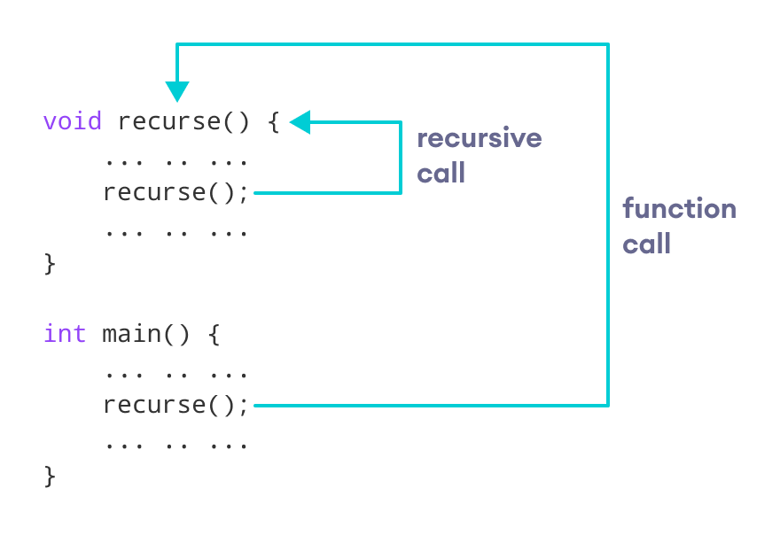

Recursion is the technique of making a function call itself. This technique provides a way to break complicated problems down into simple problems which are easier to solve. The recursion continues until some condition is met.
To Write a recursive function, you need to think about two things:
Here, n==0 is the base case that will terminate the iteration of the function when n becomes equal to zero.
return(n-1) is the recursive function that will help in the repetition of code.
#include <bits/stdc++.h>
using namespace std;
// factorial of n = 1*2*3*..*n
int factorial(int n)
{
if(n==1)
return 1;
return n*factorial(n-1);
}
int main()
{
int n, result;
cout << "Enter a non-negative number: ";
cin >> n;
result = factorial(n);
cout << "Factorial of " << n << " = " << result;
return 0;
}
Output :
Enter a non-negative number: 5
Factorial of 5 = 120
Factorial of a Number Using Recursion
#include
<bits/stdc++.h>
using
namespace std;
//In
the Fibonacci series, each number is the sum of its previous two numbers.
int
Fibonacci(int n){
if(n<=1)
return n;
return Fibonacci(n-1) + Fibonacci(n-2);
}
int
main() {
int n, result;
cout <<
"Enter a non-negative number: ";
cin >> n;
result = Fibonacci(n);
cout <<
"Fibonacci of " << n << " = " << result;
return 0;
}
Output :
Enter a non-negative number: 5
Fibonacci of 5 = 5
Fibonacci of a Number Using Recursion
Advantages of C++ Recursion
Disadvantages of C++ Recursion
Another topic: